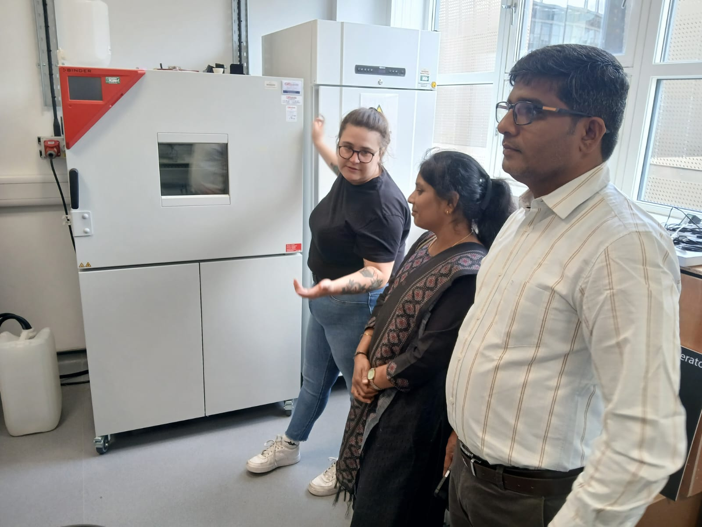
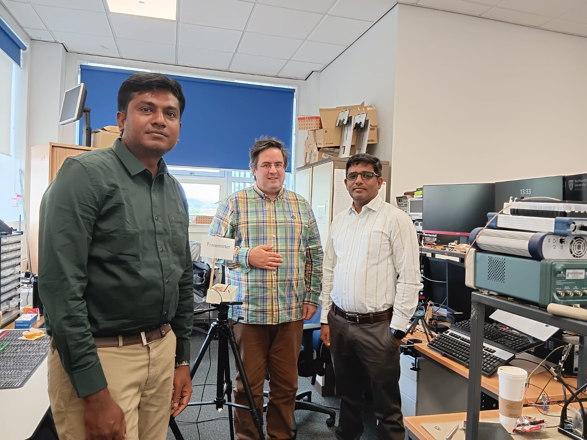
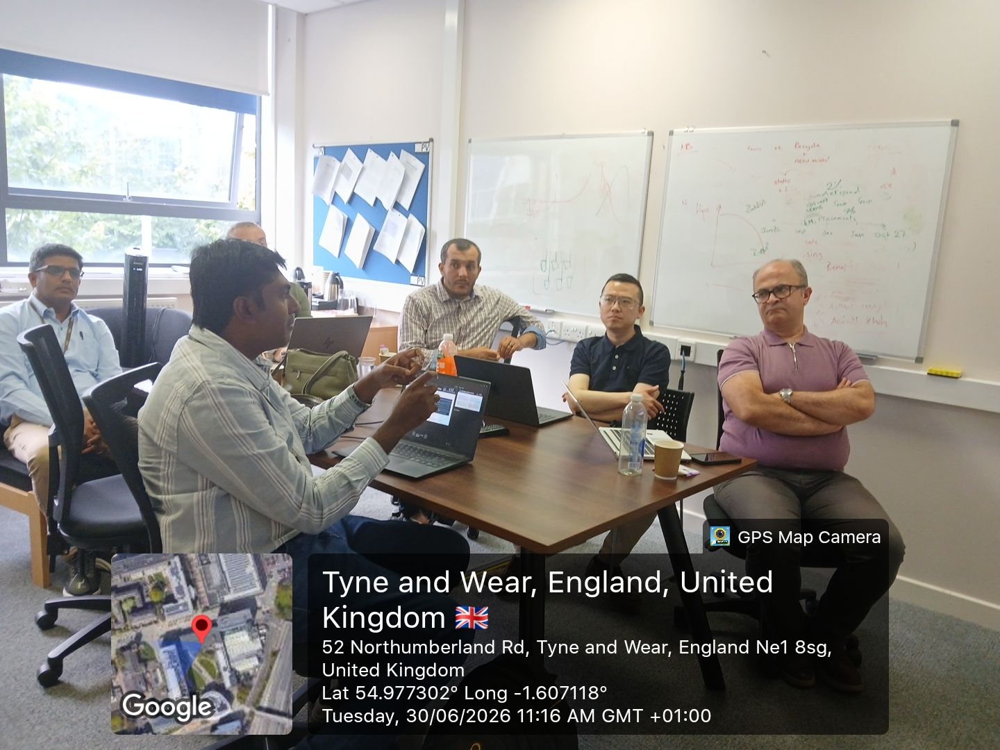
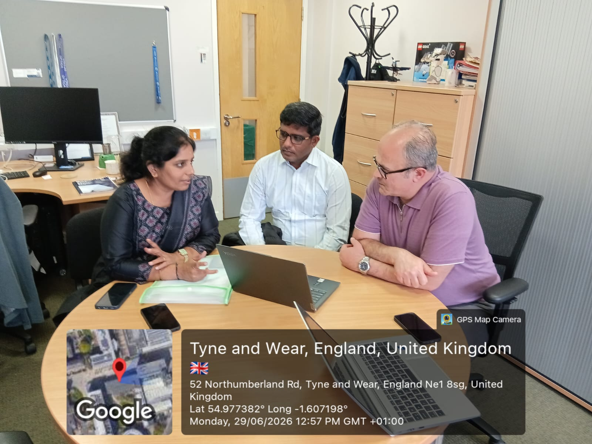

About the Visit
As part of the British Council-funded Indo–UK collaborative project,
"Advancing Quantum Vision Systems: Real-Time Surveillance Skill Building for Smart Energy Facilities,"
the project team from Vellore Institute of Technology (VIT), India, comprising
Dr. G. N. Balaji (Principal Investigator), Prof. V. Subramaniyaswamy, and
Dr. V. Indragandhi, visited Northumbria University, Newcastle upon Tyne,
United Kingdom, on 29–30 June 2026 to conduct technical workshops,
collaborative meetings, laboratory visits, and strategic discussions aimed at
advancing the project's research, education, and innovation objectives.
The visit commenced with a comprehensive review of the project's ongoing
activities, including progress on skills development workshops, bilateral
hackathons, collaborative digital platform development, dissemination
activities, research publications, and the project website. These discussions
were led by Dr. Allaham with active participation from the VIT project team.
Strategic meetings were subsequently held with Prof. Hoa Le-Minh,
Associate Head of School (Engineering, Physics and Mathematics for TNE),
and Prof. Jing Jiang, Leader for Transnational Education (TNE) with Chinese
universities, to review the progress of the Memorandum of Understanding
(MoU) and explore future opportunities for academic collaboration, joint
programmes, student mobility, and institutional partnerships.
A major highlight of the visit was the technical workshop featuring
presentations by leading researchers from Northumbria University.
Dr. Muhammed Cavus presented his research on
Digital Twin Platforms for Real-Time Power Grid Resilience Assessment under Extreme Weather,
while Dr. Abderrahmen Trichili delivered an interactive session on
Practical Design of Optical Wireless Communication Links,
including live laboratory demonstrations.
The VIT team delivered a presentation on
"Advancing Quantum Vision Systems,"
showcasing recent advances in integrating Artificial Intelligence and Quantum
Computing for intelligent surveillance and sustainable smart energy
applications. In the afternoon, Dr. Mike Taverne and Dr. Daniel Ho
demonstrated emerging concepts in quantum technologies through their
session "Playing the Quantum Hand" at the Nanophotonic Engineering
Laboratory, followed by Dr. Haimeng Wu, who presented recent developments
in AI-Enabled Home Automation.
The delegation also participated in an extensive laboratory tour coordinated
by Bethan Ford, visiting Northumbria University's advanced research
facilities supporting optical wireless communications, nanophotonics,
intelligent sensing, quantum technologies, artificial intelligence,
and smart energy systems. The visit enabled the team to interact with
researchers, observe cutting-edge experimental infrastructure, discuss
ongoing research projects, and identify opportunities for collaborative
experimentation, shared datasets, joint supervision of research scholars,
and future international funding proposals.
The visit concluded with a dedicated session on future collaboration,
chaired by Dr. Allaham, where both institutions agreed to strengthen their
partnership through joint research projects, collaborative publications,
faculty and student exchange programmes, international workshops,
industry engagement activities, and curriculum development in Quantum
Computing, Artificial Intelligence, Computer Vision, and Smart Energy
Systems.
The successful visit significantly strengthened the Indo–UK partnership
between Vellore Institute of Technology and Northumbria University,
reinforcing a shared commitment to advancing cutting-edge research,
international knowledge exchange, and capacity building in quantum
technologies and AI-driven sustainable energy solutions.
Project Visit to Northumbria University, United Kingdom



Visit Objectives
- Strengthen Indo–UK academic partnership.
- Exchange knowledge in Quantum Computing and AI.
- Discuss future joint research proposals.
- Promote faculty and student mobility.
- Explore advanced research laboratories.
- Develop innovative teaching resources.
Key Achievements
- Academic collaboration meetings successfully completed.
- Research ideas exchanged with international experts.
- Laboratory demonstrations and technology showcases attended.
- Potential collaborative research areas identified.
- International networking established among faculty members.
- Future project roadmap discussed.
Photo Gallery

